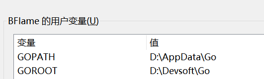

1. 环境配置
1.1. 安装
在官网下载Go https://golang.google.cn/dl/
设置安装目录一路安装即可
1.2. 配置环境变量
配置GOPATH和GOROOT
其中GOPATH是存放Go的主要路径，
- GOPATH/bin 存放Go install * 命令的文件，后续提到swagger会用到
GOROOT是Go的根目录

并将$GOROOT/bin、$GOPATH/bin添加系统变量PATH：


现在即可以通过 go version 查看Go语言版本

1.2.1. 推荐设置
Go env setting
go env -w GOPROXY=https://goproxy.cn,direct七牛设置的代理，设置后可大大提升安装包的速度！！！
IDE配置
主要有Goland和Vscode
推荐使用vscode主要插件:Go , 使用后可自动删除未使用的import 并处理代码格式

安装后可使用
ctrl+shift+P输入从而更新包 当然也可以使用go get -u all来更新Go

1.3. Hello，world！！
— 一切的开始
package main
import "fmt"
func main() {
fmt.Println("Hello, world")
}
使用 go run main.go (文件名） 即可运行，注意运行单文件的包名需要是main

好了，你已经会写 hello, world 了，那么现在来用Go语言完成本学习的学术分享平台吧！！！（×）
1.4. Go web开发
主要使用Gin框架，下图是Go开发中主要的项目结构，不过多介绍了

PS 图来自《Go高级编程》 5.7 大型Web项目分层(侵删）
下面使用一个Gin的简单程序
package main
import "github.com/gin-gonic/gin"
func main() {
r := gin.Default()
r.GET("/", func(c *gin.Context) {
c.JSON(200, gin.H{
"message": "success",
})
})
r.Run(":8000")
}
如果项目中不存在 go.mod 文件需要使用 go mod init 生成mod文件，而后使用 go mod tidy 安装依赖。使用 go run main.go 运行即可，访问 localhost:8000/ 查看到message 表示链接成功
好了，你已经真正的学会了如何用 Gin 开发Web程序，下面开始你的Go之旅吧！！
展望（小声）
后面可能会把Go配置Elastic Search的过程弄一下，以及在涉及到 Go处理并发时会出一下学习笔记
1.4.1. 参考
摘自个人博客